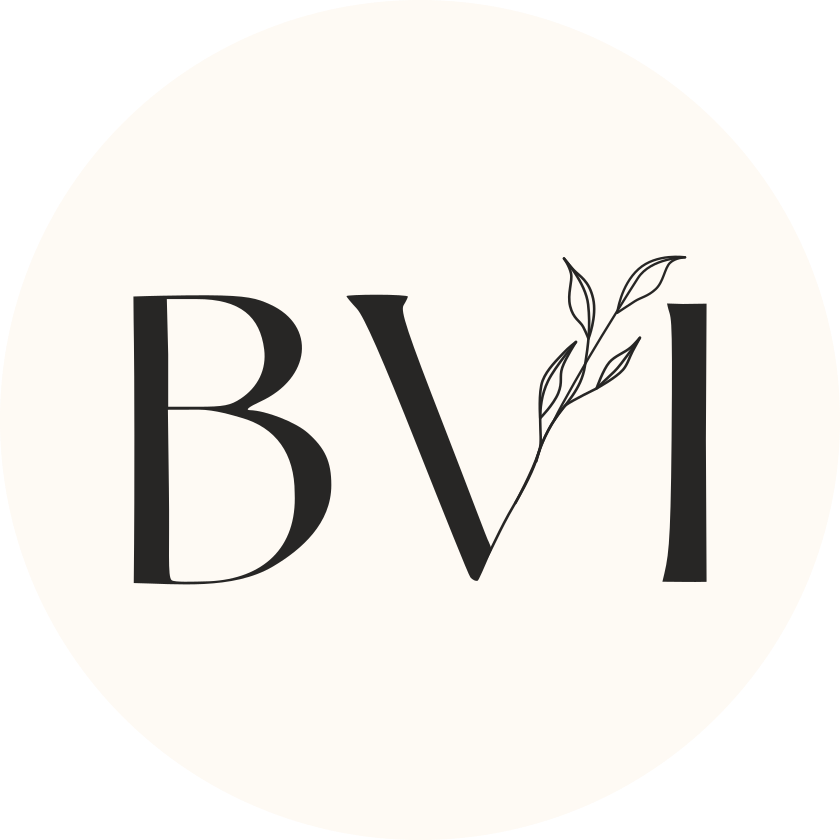

<footer class="site-footer column-screen">
  <div class="footer-container">
    
    <!-- Left Section -->
    <div class="footer-left">
      <h3>Benjamin Ineichen</h3>
      <p>Bern, Switzerland</p>
    </div>
    <!-- Center Logo -->
    <div class="footer-logo">
      
    </div>
    <!-- Right Section -->
    <div class="footer-right">
      <h3>Get in touch</h3>
      <p><a href="mailto:example@email.com">email me</a></p>
    </div>
  </div>
  
  
<div class="language-switch">
  <a id="lang-en" href="#">English</a> |
  <a id="lang-de" href="#">Deutsch</a>
</div>

<script>
(function() {
  var path = window.location.pathname;
  var isGerman = path.indexOf('/de/') !== -1;

  var enLink = document.getElementById('lang-en');
  var deLink = document.getElementById('lang-de');

  if (isGerman) {
    enLink.href = path.replace('/de/', '/');
    deLink.href = path;
  } else {
    enLink.href = path;
    var idx = path.lastIndexOf('/');
    deLink.href = path.substring(0, idx) + '/de' + path.substring(idx);
  }
})();
</script>

  <div class="footer-bottom">
    <p class="psst">This website was programmed in Quarto by <a href="https://mariannarosso.github.io/Portfolio/" target="_blank">Marianna Rosso</a> — <a href="https://github.com/MariannaRosso/achtsamkeit" target="_blank">see the code here</a>.</p>
  </div>
</footer>